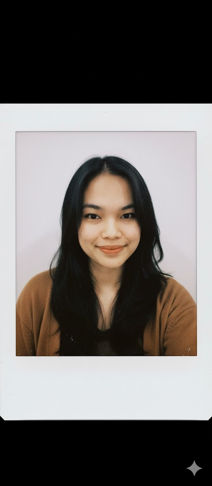

HEY, I'M

"Building digital experiences that make a difference, one line of code at a time."
An undergraduate Informatics Engineering student passionate about building user-centered digital experiences. I enjoy learning new technologies, solving real-world problems through code, and contributing to collaborative projects. Currently exploring UI/UX design, mobile app development, and backend integration.